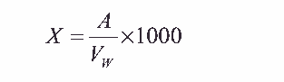
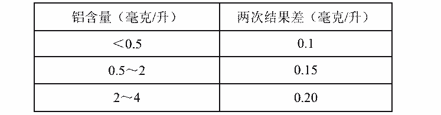

15.铝离子的测定 8—羟基喹啉分光光度法
本方法适用于循环冷却水和天然水中铝离子的测定。
1．原理
在酸性介质中，用过硫酸铵加热分解聚磷酸盐及有机膦酸盐为正磷酸盐，以消除对铝的
络合干扰，铝与 8—羟基喹啉反应生成黄绿色的 8—羟基喹啉铝，调节 pH5～7，使发色强度
最大，然后用氯仿萃取 8—羟基喹啉铝盐，于 420nm，用分光光度法测定。水样中三价铁和
二价铜离子对测定有干扰，应消除。钙、镁离子和氟离子不干扰测定。
2．试剂
2.1 过硫酸铵。
2.2 无水硫酸钠。
2.3 氯仿。
2.4 0.1%邻菲罗啉溶液。
2.5 10%盐酸羟胺溶液。
2.6 0.5mol/L 硫酸溶液。
2.7 1%8—羟基喹啉醋酸溶液。
称取 2g8—羟基喹啉（ C9H7NO）溶于 6mL 冰醋酸中，用水稀释至 200mL。
2.8 3mol/L 乙酸钠溶液。
称取 40.8g 乙酸钠（ CH3COONa·3H2O）， 溶于水中，移入 100mL 容量瓶中，用水稀释
至刻度。
2.9 铝离子标准溶液。
称取 1.759g 硫酸铝钾〔 KAl（ SO4） 2·12H2O〕溶于水中，移入 1000mL 容量瓶中，用
水稀释至刻度，此溶液 1mL 含 0.1mg 铝。吸取此溶液 25mL，移入 250mL 容量瓶中，用水
稀释至刻度，此稀释液为 1mL 含 0.01mg 铝标准溶液。
3．仪器
3.1 分光光度计。
3.2 分液漏斗： 120mL。
3.3 电炉： 300W。
4．分析步骤
4． 1 标准曲线的绘制
4.1.1 分别吸取 1mL 含 0.01mg 铝标准溶液 0， 1.0， 2.0， 3.0， 4.0， 5.0mL 于 6 只
125mL 锥形瓶中，加水至 25mL，加 1mL0.5mol/L 硫酸溶液。
4.1.2 加 1mL10%盐酸羟胺溶液，加热煮沸 1 分钟，冷却后加入 2mL0.1%邻菲罗啉
溶液，摇匀，再加入 4mL8—羟基喹啉溶液及 3mL3mol/L 乙酸钠溶液，摇匀后，移入 125mL
分液漏斗，用移液管加入 10mL 氯仿，剧烈振荡 1 分钟，静止分层后，将氯仿移入预先装有
约 1g 无水硫酸钠的 50mL 锥形瓶中，摇动以脱去氯仿相中的微量水分，于 420nm 处，用 1cm
比色皿，以试剂空白为参比，测其吸光度，以吸光度为纵坐标，铝离子毫克数为横坐标，绘
制标准曲线。
4． 2 水样的测定
吸取 25mL 水样（铝含量大于 2mg/L 时可取 10mL）移入 100mL 锥形瓶中，加入
1mL0.5mol/L 硫酸溶液及 50～100mg 过硫酸铵，用少量水冲洗瓶壁，然后于电炉上微沸 5
分钟，以下按标准曲线绘制 4.1.2 步骤，测其吸光度。
如水样中不含聚磷酸盐及有机膦酸盐时，可不加过硫酸铵。
5．分析结果的计算
水样中铝离子含量 X（毫克/升）， 按下式计算：

式中： A——从标准曲线上查得的铝离子含量，毫克；
VW——水样体积，毫升。
6．注释
6.1 三价铁、二价铜对测定有干扰，在测定中加盐酸羟胺将三价铁还原为二价铁，
再与邻菲罗啉生成邻菲罗啉铁络合物，消除干扰。
6.2 二价铜的干扰较大，随含量增加产生正偏差也较大。在测定含铜水样时，需做
校正曲线：取铜标准溶液，按分析步骤测其吸光度，并用铝标准曲线上求出相对应的铝含量
（毫克/升）作纵坐标，以铜离子浓度（毫克/升）作横纵坐标绘图测定水样中的铜含量，加
以校正。
6.3 水样中钙、镁、三价铬及少量的氟离子不干扰测定。
7．允许差
平行测定两结果差不大于。

8．结果表示
取平行测定两结果算术平均值，作为水样的铝离子含量。